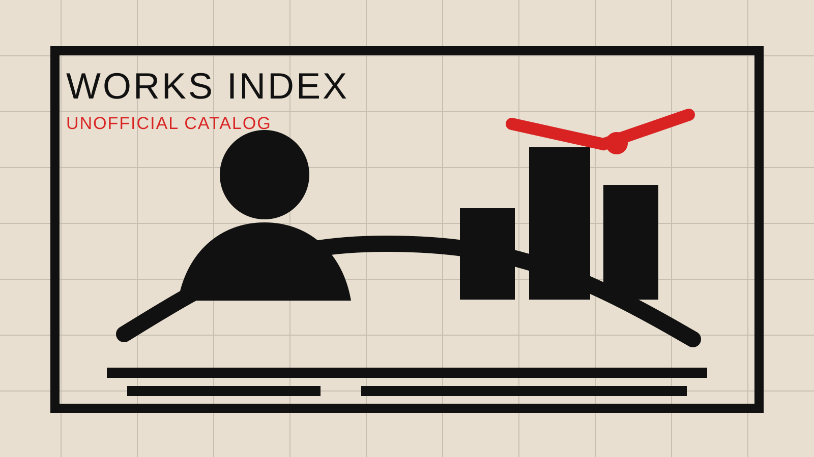
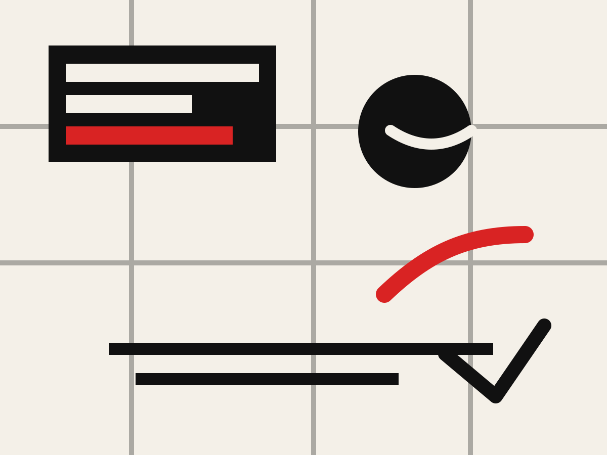

反権力
警察、軍事、監視、制度への違和感を、短い視覚言語で提示します。
STREET ART CATALOG
壁画、オークションでの介入、社会批評、近年のロンドン動物シリーズまで。作品そのものの画像ではなく、公開情報に基づくタイトル・年・場所・文脈で整理した作品一覧です。

注: 実作品画像は掲載していません。権利に配慮し、独自制作の抽象ビジュアルとテキスト解説で構成しています。
WORKS
年代順、ジャンル別に切り替えて閲覧できます。
TIMELINE

THEMES
警察、軍事、監視、制度への違和感を、短い視覚言語で提示します。
作品が高値で取引される状況そのものを、作品の一部として扱います。
街角、壁、シャッター、仮設物が展示空間になり、鑑賞者も偶然巻き込まれます。
SOURCES
作品名・年・近年作の確認に使った公開情報です。最新性が必要な場合は、Banksy本人の公式InstagramやPest Controlの認証情報も確認してください。